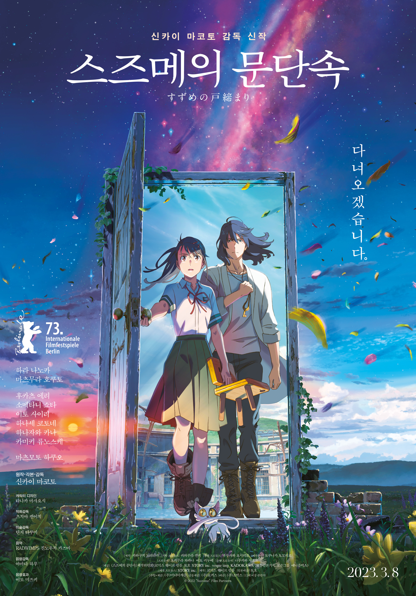

스즈메의 문단속
Suzume

감독 : 신카이 마코토
배우 : 하라 나노카 , 마츠무라 호쿠토 , 후카츠 에리 , 마츠모토 코시로 , 소메타니 쇼타 ,
이토 사이리 , 하나세 코토네 , 하나자와 카나 , 카미키 류노스케
장르 : 애니메이션
기본 : 12세 이상 관람가, 122분, 일본
개봉 : 2023.03.08
“이 근처에 폐허 없니? 문을 찾고 있어”
규슈의 한적한 마을에 살고 있는 소녀 ‘스즈메’는문을 찾아 여행 중인 청년 ‘소타’를 만난다.
그의 뒤를 쫓아 산속 폐허에서 발견한 낡은 문.
‘스즈메’가 무언가에 이끌리듯 문을 열자 마을에 재난의 위기가 닥쳐오고
가문 대대로 문 너머의 재난을 봉인하는 ‘소타’를 도와 간신히 문을 닫는다.
“닫아야만 하잖아요, 여기를!”
재난을 막았다는 안도감도 잠시,수수께끼의 고양이 ‘다이진’이 나타나 ‘소타’를 의자로 바꿔 버리고
일본 각지의 폐허에 재난을 부르는 문이 열리기 시작하자
‘스즈메’는 의자가 된 ‘소타’와 함께 재난을 막기 위한 여정에 나선다.
“꿈이 아니었어”
규슈, 시코쿠, 고베, 도쿄재난을 막기 위해 일본 전역을 돌며 필사적으로 문을 닫아가던 중
어릴 적 고향에 닿은 ‘스즈메’는 잊고 있던 진실과 마주하게 되는데…